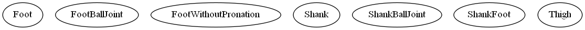

Master index
Index for Functions\Models\Leg\ModelParts
Dependency Graph for Functions\Models\Leg\ModelParts

Generated on Tue 03-Jul-2018 16:25:43 by
m2html
© 2005
 Master index
Master index Master index
Master index